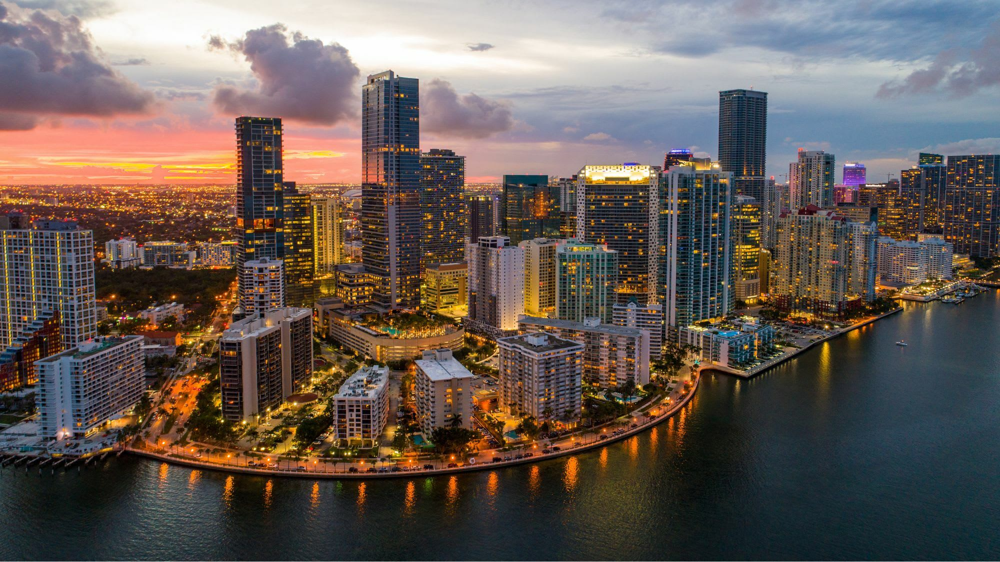

ABOUT FLORIDA
Florida’s original Spanish name is La Florida, which means “place of flowers.” Some historians think Ponce de León chose the name to honor the blooming flowers he saw there, or in tribute to Spain’s Easter celebration called Pascua Florida, or “Feast of Flowers.”

Arts & Culture: Museums
Experience a world of art, culture and history when you go museum-hopping in Naples, Marco Island and the Everglades. Explore a variety of fine art collections, discover the work of accomplished local artists, learn about the area’s fascinating past and immerse yourself in cultures beyond the Paradise Coast.
Artis—Naples
Home of The Baker Museum and the Naples Philharmonic, Artis-Naples is unique among cultural institutions nationwide, equally dedicated to both the visual and performing arts, featuring artists of global distinction. Led by CEO and President Kathleen van Bergen, the organization offers audiences more than 800 paid and free events annually within a variety of venues and settings situated throughout the 8.5-acre Kimberly K. Querrey and Louis A. Simpson Cultural Campus.
Golisano Children's Museum of Naples (CMON)
The Golisano Children's Museum of Naples is a brain-building powerhouse and Southwest Florida's first museum devoted for children and families to learn through play. With hands-on exhibit galleries, the accessible museum invites visitors of all ages to journey through the swamps of the Everglades, weave through a maze, climb a two-story banyan tree, or experiment with the water play station. Children can become a weather forecaster, a farmer, a chef, a fisherman, an artist, an architect or a veterinarian; explore the cold of an igloo, the whoosh of the wind, the sound of the sea, the effects of water and the colors of the rainbow. Throughout the day special activities encourage our guests to get involved, try something new and be energized.
Marco Island Historical Museum
Long famous for its Key Marco Cat, one of the most remarkable and influential discoveries in North American archaeology, the Marco Island Historical Museum explores Southwest Florida's Calusa Indians bringing this vanished civilization to life with informative displays and an immersive 3-D village. Exhibits trace the settlement of this subtropical island paradise from its early pioneer roots as a fishing village, pineapple plantation and clam cannery, through its explosive growth and development in the 1960s by the Miami-based Deltona Corporation. The Traveling Exhibit Hall showcases several new exhibits throughout the year.
Things to Do in Florida
Brevard Zoo - Melbourne, FL
With over 650 animals and 165 species to see, you can even feed a giraffe or a kangaroo. There is also a petting zoo, splash pad for the kids, kayaking tours and Treetop Trek - an over the zoo canopy walk, a zip line course over alligators and crocodiles, or both.
Kennedy Space Center - Merritt Island, FL
There are over 32 attractions and tours included in the price of your admission, with some amazing additional programs like the Astronaut Training Program for an additional amount. My favorite attraction is the awe-inspiring Rocket Garden.
Camp Holly Air Boat Rides - Melbourne, FL
There are lots of alligators to see and tree roots to glide over. Having a bit of a boating background where you traditionally avoid tree roots made it even more of an exciting ride for me.
Blackpoint WildLife Drive - Merritt Island, FL
This is a 7-mile road that you can drive in your car where you may see wildlife such as alligators, otters, manatees, and bobcat, as well as many different birds like herons, hawks, owls, Roseate Spoonbills (my personal favorite) and more.
LunaSea Alpaca Farm - Clermont, FL.
My daughter took me here for my birthday a couple of years ago, and I really enjoyed spending time with the alpacas and llamas, especially the babies. You will need to make a reservation to visit.